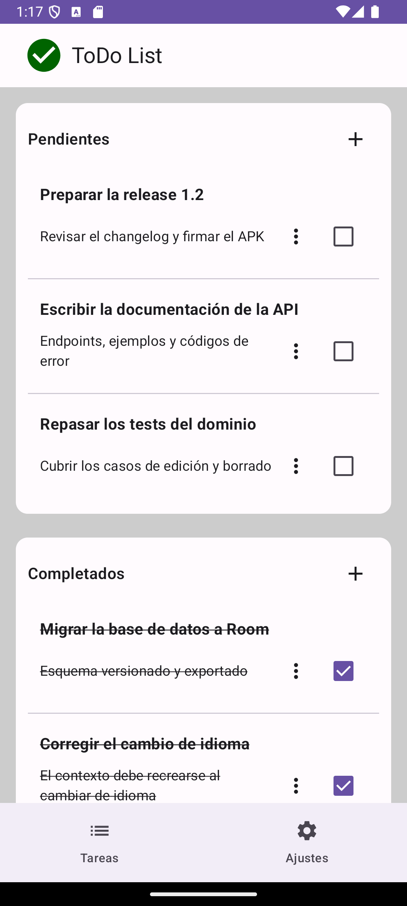
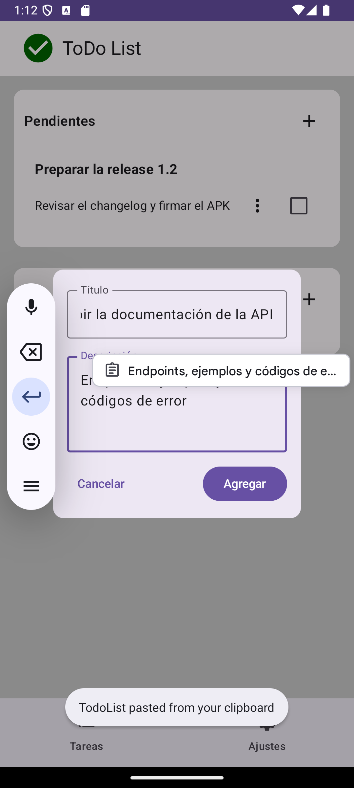
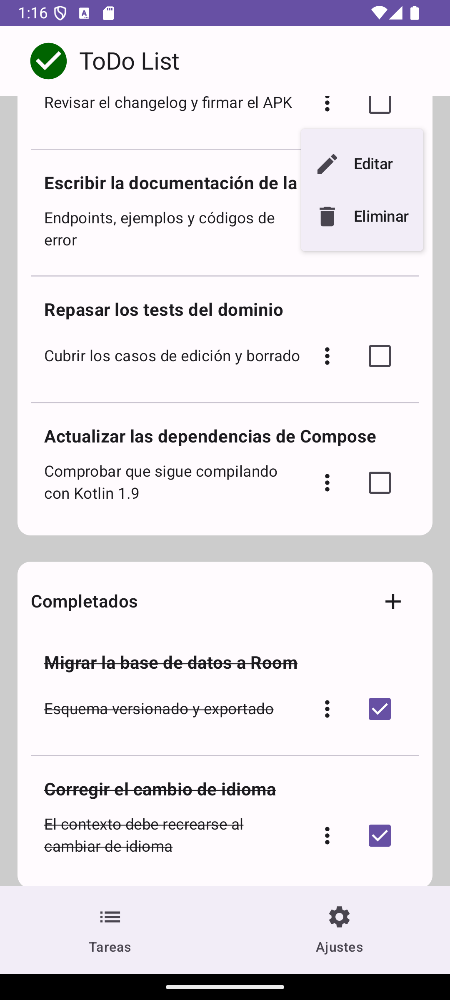
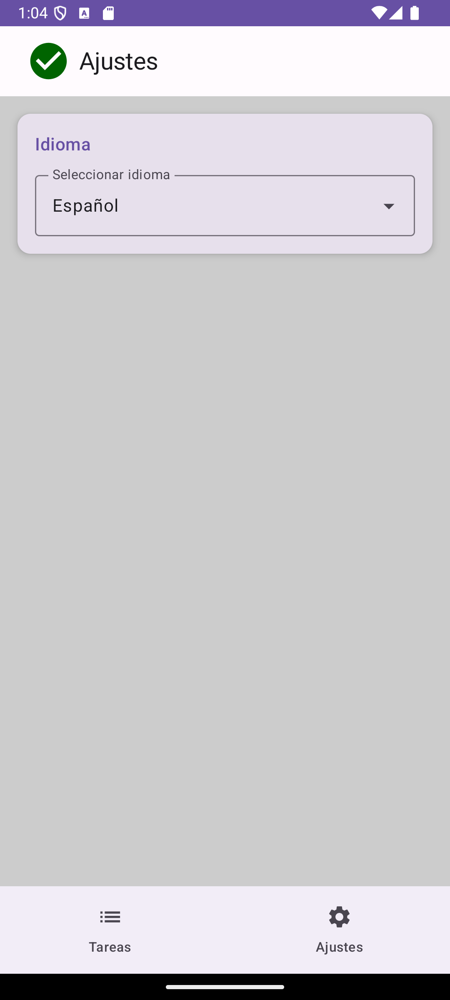
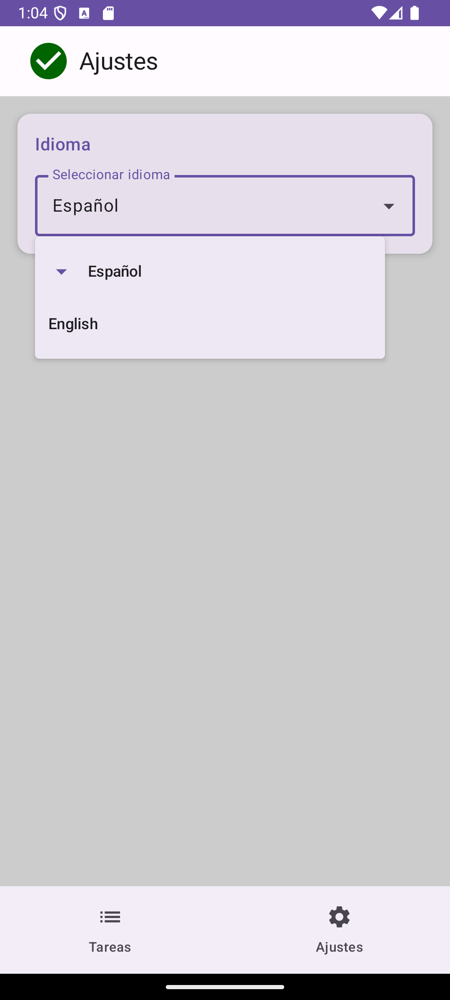

TodoList
App de tareas con Clean Architecture, Room y una interfaz Compose que reacciona al instante, disponible en español e inglés.
- Kotlin
- Jetpack Compose
- Hilt
- Room
- Flow
- JUnit · MockK
- Robolectric
- Detekt
- GitHub Actions
El problema
Una lista de tareas es el ejercicio de ejemplo de casi cualquier tutorial, y por eso mismo es un buen sitio para lo contrario: para enseñar cómo se construye una app pequeña que se pueda mantener y probar. Las decisiones interesantes no están en la pantalla —dos listas y un diálogo—, sino en dónde vive cada cosa.
¿Quién decide qué es una tarea? ¿Cómo se guarda? ¿Cómo se prueba un caso de uso que escribe en disco sin esperar a un hilo real? ¿Y cómo se cambia de idioma sin reiniciar la app a mano?
Cómo lo resolví
- Tres capas (dominio, datos, UI) con las dependencias en una sola dirección: la UI no conoce Room y el dominio no conoce a nadie. Cada capa tiene su propio modelo, y los mapeos viven en la frontera.
- Los casos de uso reciben el CoroutineDispatcher por inyección y devuelven un Job. En producción reciben el dispatcher de E/S; en los tests, un TestDispatcher. Por eso los tests son deterministas y no hay esperas reales.
- Persistencia local con Room (tabla todos, versión 1, esquema exportado al repositorio) y el grafo de dependencias con Hilt.
- Interfaz con Jetpack Compose: sección de pendientes y de completados, diálogo de alta y edición, menú por tarea (editar y eliminar) y tachado al completar.
- Español e inglés de verdad, con recursos por idioma. La preferencia se guarda en SharedPreferences y el Locale se aplica en attachBaseContext, antes de componer, así que no hay parpadeo de idioma al abrir.
- Calidad automatizada: JUnit + MockK en los tests unitarios, Robolectric para los de interfaz, y Detekt + Android Lint. Cada push a main compila y publica un APK firmado como release.
Capturas
La interfaz se capturó en español; la app también está disponible en inglés. Los datos son de ejemplo.
-

La listaPendientes y completados, cada uno con su descripción. -

Nueva tareaTítulo y descripción, con un ejemplo de edición. -

Acciones por tareaEditar y eliminar desde el propio elemento. -

AjustesLa opción de idioma, junto al resto de preferencias. -

IdiomaLa app se ofrece en español y en inglés.
Decisiones que sostienen el resto
- Tres capas y una sola dirección
- Cada capa tiene su modelo. La UI no ve entidades de base de datos y el dominio no ve ninguna librería de Android. Cambiar Room por otra cosa no tocaría la lógica.
- El hilo se inyecta, no se elige
- Ningún caso de uso decide en qué hilo corre: lo recibe. Los tests meten un dispatcher controlado y comprueban el resultado sin dormir el proceso.
- El idioma se fija antes de componer
- El Locale guardado se aplica en attachBaseContext, de modo que la primera pantalla ya sale en el idioma correcto, sin recargarse.
- La integración continua compila, analiza y publica
- Cada push a main pasa Detekt, compila la versión de release y firma el APK. El análisis estático es una puerta, no un aviso.
Lo que mejoraría
- El botón «+» de la sección «Completados» crea la tarea como pendiente: el estado se deduce del primer elemento de la lista (items.firstOrNull()?.completed) en lugar de la sección. Con la sección vacía no hay elemento del que deducirlo, así que cae en pendiente. Lo suyo es que el encabezado reciba su propio estado.
- Las etiquetas de accesibilidad del menú inferior están escritas en la vista y no salen de los recursos de cadena, así que el cambio de idioma no las cubre. Es un arreglo pequeño con mucha ganancia.
- Y dos funciones que echo de menos: un buscador y reordenar las tareas arrastrando.